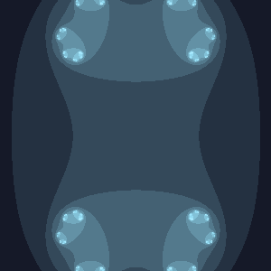
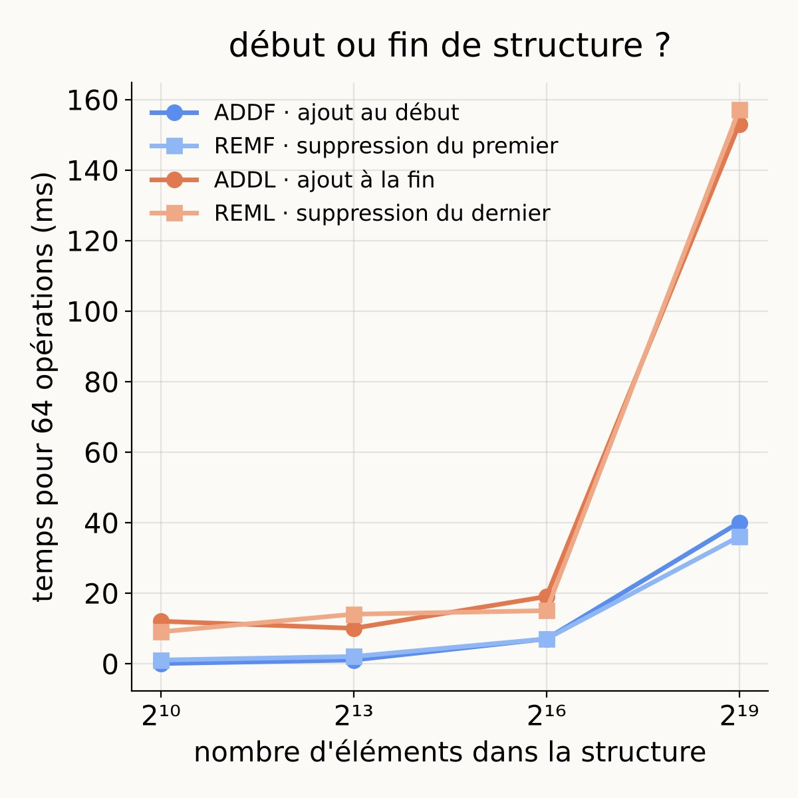
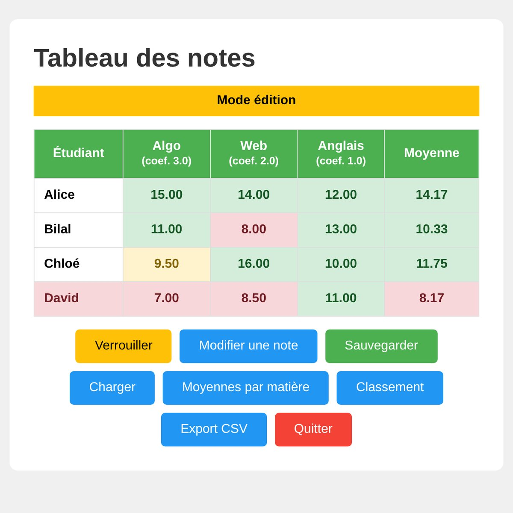

Application web Laravel conçue à quatre pour que les fans d'animés et de mangas tiennent leurs listes à jour.
Mes projets
Travaux d'équipe ou réalisations en solo, projets de cours ou idées nées d'une envie personnelle : chaque vignette raconte une étape de mon apprentissage, en Java, en web, en Python ou en réseau. Les plus récents ouvrent la marche. Faites défiler pour remonter le temps, et voyez mon code rajeunir à chaque projet.
Les applications se récupèrent en archive .zip ; la pastille bientôt en ligne signale un dépôt encore en préparation.
-
application · .zip
-
Space Invaders
bientôt en ligneLe classique Space Invaders recodé en Java en équipe sous GitLab, avec la qualité du code pour boussole.
-
Voix en image
bientôt en ligneScript Python qui transforme une voix en image : son spectrogramme s'enroule en spirale lumineuse ou en couronne de rayons.
-
Carte des tout-petits
bientôt en ligneApplication web Laravel, conçue seule, où les parents épinglent sur une carte OpenStreetMap les lieux adaptés aux tout-petits.
-

FractaLens (télécharger l'archive .zip)
application · .zipSix sprints en équipe pour bâtir FractaLens : une bibliothèque Java qui change des nombres complexes en fractales animées.
-
Géocodage Flask
bientôt en ligneApplication Flask qui interroge l'API de géocodage de l'État et traduit chaque adresse en données lisibles, en français.
-
Caisse de food-truck
bientôt en ligneCaisse Android pour food-truck de quiches : API Flask, PostgreSQL et TPE SumUp suivent chaque vente jusqu'au dernier ingrédient.
-
Les Amis de Buxton
bientôt en ligneSite de l'association de jumelage Oignies–Buxton, un pont numérique entre deux villes de part et d'autre de la Manche.
-
Labo netsim
bientôt en ligneLaboratoire réseau personnel sous KVM qui fait naître huit topologies de cours à partir d'une seule image système.
-
application · .zip
Application Java et Gradle menée à trois pour un cabinet médical : patients, médecins, rendez-vous et ordonnances y trouvent leur dossier.
-
ToDoList+
bientôt en ligneGestionnaire de tâches en JavaFX et Gradle, monté presque de zéro, de la configuration jusqu'à la première case cochée.
-
resumeCV
bientôt en ligneVisionneuse de CV en JavaFX bâtie en MVC avec Scene Builder, où l'interface et les données vivent chacune chez elles.
-
Pac-Man
bientôt en lignePac-Man recodé en JavaFX, où le héros pivote pour toujours regarder dans la direction où il avance.
-
Base de données (SAÉ R2.04)
bientôt en ligneBase PostgreSQL sur l'emploi modélisée en Merise, normalisée en 3FN puis interrogée en SQL depuis un conteneur Docker.
-
Scripts réseau
bientôt en ligneScripts Bash qui configurent routeurs et réseaux d'entreprises fictives en Suisse, pour une topologie qui démarre d'un seul geste.
-
Graphes
bientôt en ligneBoîte à outils Python en notebook Jupyter qui trouve plus courts chemins et arbres couvrants sur n'importe quel graphe.
-
Statistiques
bientôt en ligneMoyennes, écarts-types et corrélations recodés en Python, pour voir les formules statistiques prendre vie ligne par ligne.
-
Portfolio BUT 1
bientôt en lignePortfolio de BUT 1 qui relie chaque SAÉ aux six compétences du référentiel, preuves à l'appui.
-

Comparaison d'approches algorithmiques
code · Java, PythonSAÉ 1.02 : tests d'une structure de données inconnue, algorithmes de piles, files et tri fusion, mesures de performance analysées dans un notebook Python.
-

Gestion des notes en Java
code · JavaSAÉ 1.01 : application Java pilotant le navigateur pour saisir les notes d'une promotion, calculer les moyennes pondérées, sauvegarder, classer et exporter en CSV.
-
site web
SAÉ 1.05 / 1.06 : création d'une entreprise fictive de l'économie sociale et solidaire, de l'enquête et des personae jusqu'aux chartes, aux maquettes Figma et au site vitrine responsive en HTML, CSS et JavaScript.